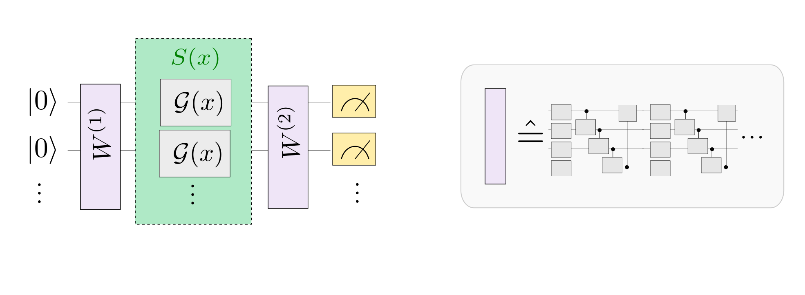

%matplotlib inline
Quantum models as Fourier series¶
This demonstration is based on the paper The effect of data encoding on the expressive power of variational quantum machine learning models by Schuld, Sweke, and Meyer (2020).
The paper links common quantum machine learning models designed for near-term quantum computers to Fourier series (and, in more general, to Fourier-type sums). With this link, the class of functions a quantum model can learn (i.e., its “expressivity”) can be characterized by the model’s control of the Fourier series’ frequencies and coefficients.
Background¶
Ref. considers quantum machine learning models of the form
where \(M\) is a measurement observable and \(U(x, \boldsymbol \theta)\) is a variational quantum circuit that encodes a data input \(x\) and depends on a set of parameters \(\boldsymbol \theta\). Here we will restrict ourselves to one-dimensional data inputs, but the paper motivates that higher-dimensional features simply generalize to multi-dimensional Fourier series.
The circuit itself repeats \(L\) layers, each consisting of a data-encoding circuit block \(S(x)\) and a trainable circuit block \(W(\boldsymbol \theta)\) that is controlled by the parameters \(\boldsymbol \theta\). The data encoding block consists of gates of the form \(\mathcal{G}(x) = e^{-ix H}\), where \(H\) is a Hamiltonian. A prominent example of such gates are Pauli rotations.
The paper shows how such a quantum model can be written as a Fourier-type sum of the form
As illustrated in the picture below (which is Figure 1 from the paper), the “encoding Hamiltonians” in \(S(x)\) determine the set \(\Omega\) of available “frequencies”, and the remainder of the circuit, including the trainable parameters, determines the coefficients \(c_{\omega}\).
The paper demonstrates many of its findings for circuits in which \(\mathcal{G}(x)\) is a single-qubit Pauli rotation gate. For example, it shows that \(r\) repetitions of a Pauli rotation-encoding gate in “sequence” (on the same qubit, but with multiple layers \(r=L\)) or in “parallel” (on \(r\) different qubits, with \(L=1\)) creates a quantum model that can be expressed as a Fourier series of the form
where \(\Omega = \{ -r, \dots, -1, 0, 1, \dots, r\}\) is a spectrum of consecutive integer-valued frequencies up to degree \(r\).
As a result, we expect quantum models that encode an input \(x\) by \(r\) Pauli rotations to only be able to fit Fourier series of at most degree \(r\).
Goal of this demonstration¶
The experiments below investigate this “Fourier-series”-like nature of quantum models by showing how to reproduce the simulations underlying Figures 3, 4 and 5 in Section II of the paper:
Figures 3 and 4 are function-fitting experiments, where quantum models with different encoding strategies have the task to fit Fourier series up to a certain degree. As in the paper, we will use examples of qubit-based quantum circuits where a single data feature is encoded via Pauli rotations.
Figure 5 plots the Fourier coefficients of randomly sampled instances from a family of quantum models which is defined by some parametrized ansatz.
The code is presented so you can easily modify it in order to play around with other settings and models. The settings used in the paper are given in the various subsections.
First of all, let’s make some imports and define a standard loss function for the training.
import matplotlib.pyplot as plt
import pennylane as qml
from pennylane import numpy as np
np.random.seed(42)
def square_loss(targets, predictions):
loss = 0
for t, p in zip(targets, predictions):
loss += (t - p) ** 2
loss = loss / len(targets)
return 0.5*loss
Part I: Fitting Fourier series with serial Pauli-rotation encoding¶
First we will reproduce Figures 3 and 4 from the paper. These show how quantum models that use Pauli rotations as data-encoding gates can only fit Fourier series up to a certain degree. The degree corresponds to the number of times that the Pauli gate gets repeated in the quantum model.
Let us consider circuits where the encoding gate gets repeated sequentially (as in Figure 2a of the paper). For simplicity we will only look at single-qubit circuits:
Define a target function¶
We first define a (classical) target function which will be used as a “ground truth” that the quantum model has to fit. The target function is constructed as a Fourier series of a specific degree.
We also allow for a rescaling of the data by a hyperparameter scaling, which we will do in the quantum model as well. As shown in, for the quantum model to learn the classical model in the experiment below, the
scaling of the quantum model and the target function have to match, which is an important observation for the design of quantum machine learning models.
degree = 1 # degree of the target function
scaling = 1 # scaling of the data
coeffs = [0.15 + 0.15j]*degree # coefficients of non-zero frequencies
coeff0 = 0.1 # coefficient of zero frequency
def target_function(x):
"""Generate a truncated Fourier series, where the data gets re-scaled."""
res = coeff0
for idx, coeff in enumerate(coeffs):
exponent = np.complex128(scaling * (idx+1) * x * 1j)
conj_coeff = np.conjugate(coeff)
res += coeff * np.exp(exponent) + conj_coeff * np.exp(-exponent)
return np.real(res)
Let’s have a look at it.
x = np.linspace(-6, 6, 70, requires_grad=False)
target_y = np.array([target_function(x_) for x_ in x], requires_grad=False)
plt.plot(x, target_y, c='black')
plt.scatter(x, target_y, facecolor='white', edgecolor='black')
plt.ylim(-1, 1)
plt.show();
Send it after class¶
To reproduce the figures in the paper, you can use the following settings in the cells above:
For the settings
degree = 1 coeffs = (0.15 + 0.15j) * degree coeff0 = 0.1
this function is the ground truth \(g(x) = \sum_{n=-1}^1 c_{n} e^{-nix}\) from Figure 3 in the paper.
To get the ground truth \(g'(x) = \sum_{n=-2}^2 c_{n} e^{-nix}\) with \(c_0=0.1\), \(c_1 = c_2 = 0.15 - 0.15i\) from Figure 3, you need to increase the degree to two:
degree = 2
The ground truth from Figure 4 can be reproduced by changing the settings to:
degree = 5 coeffs = (0.05 + 0.05j) * degree coeff0 = 0.0
Define the serial quantum model¶
We now define the quantum model itself.
scaling = 1
dev = qml.device('default.qubit', wires=1)
def S(x):
"""Data-encoding circuit block."""
qml.RX(scaling * x, wires=0)
def W(theta):
"""Trainable circuit block."""
qml.Rot(theta[0], theta[1], theta[2], wires=0)
@qml.qnode(dev)
def serial_quantum_model(weights, x):
for theta in weights[:-1]:
W(theta)
S(x)
# (L+1)'th unitary
W(weights[-1])
return qml.expval(qml.PauliZ(wires=0))
You can run the following cell multiple times, each time sampling different weights, and therefore different quantum models.
r = 1 # number of times the encoding gets repeated (here equal to the number of layers)
weights = 2 * np.pi * np.random.random(size=(r+1, 3), requires_grad=True) # some random initial weights
x = np.linspace(-6, 6, 70, requires_grad=False)
random_quantum_model_y = [serial_quantum_model(weights, x_) for x_ in x]
plt.plot(x, random_quantum_model_y, c='blue')
plt.ylim(-1,1)
plt.show()
No matter what weights are picked, the single qubit model for [L=1]{.title-ref} will always be a sine function of a fixed frequency. The weights merely influence the amplitude, y-shift, and phase of the sine.
This observation is formally derived in Section II.A of the paper.
Send it after class¶
Increase the number of layers. Figure 4 from the paper, for example, uses the settings L=1, L=3 and L=5. What is the difference?
Finally, let’s look at the circuit we just created:
print(qml.draw(serial_quantum_model)(weights, x[-1]))
0: ──Rot(2.35,5.97,4.60)──RX(6.00)──Rot(3.76,0.98,0.98)─┤ <Z>
Fit the model to the target¶
The next step is to optimize the weights in order to fit the ground truth.
def cost(weights, x, y):
predictions = [serial_quantum_model(weights, x_) for x_ in x]
return square_loss(y, predictions)
max_steps = 50
opt = qml.AdamOptimizer(0.3)
batch_size = 25
cst = [cost(weights, x, target_y)] # initial cost
for step in range(max_steps):
# Select batch of data
batch_index = np.random.randint(0, len(x), (batch_size,))
x_batch = x[batch_index]
y_batch = target_y[batch_index]
# Update the weights by one optimizer step
weights, _, _ = opt.step(cost, weights, x_batch, y_batch)
# Save, and possibly print, the current cost
c = cost(weights, x, target_y)
cst.append(c)
if (step + 1) % 10 == 0:
print("Cost at step {0:3}: {1}".format(step + 1, c))
Cost at step 10: 0.03212041720004567
Cost at step 20: 0.01385356188302468
Cost at step 30: 0.004049396436389442
Cost at step 40: 0.0005624933894468399
Cost at step 50: 8.145777333271303e-05
To continue training, you may just run the above cell again. Once you are happy, you can use the trained model to predict function values, and compare them with the ground truth.
predictions = [serial_quantum_model(weights, x_) for x_ in x]
plt.plot(x, target_y, c='black')
plt.scatter(x, target_y, facecolor='white', edgecolor='black')
plt.plot(x, predictions, c='blue')
plt.ylim(-1,1)
plt.show();
Let’s also have a look at the cost during training.
plt.plot(range(len(cst)), cst)
plt.ylabel("Cost")
plt.xlabel("Step")
plt.ylim(0, 0.23)
plt.show();
With the initial settings and enough training steps, the quantum model learns to fit the ground truth perfectly. This is expected, since the number of Pauli-rotation-encoding gates and the degree of the ground truth Fourier series are both one.
If the ground truth’s degree is larger than the number of layers in the
quantum model, the fit will look much less accurate. And finally, we
also need to have the correct scaling of the data: if one of the models
changes the scaling parameter (which effectively scales the
frequencies), fitting does not work even with enough encoding
repetitions.
Send it after class¶
What happens for larger L?
Tip: It is an open research question whether for asymptotically large L, the single qubit model can fit any function by constructing arbitrary Fourier coefficients.
Part II: Fitting Fourier series with parallel Pauli-rotation encoding¶
Our next task is to repeat the function-fitting experiment for a circuit where the Pauli rotation gate gets repeated \(r\) times on different qubits, using a single layer \(L=1\).
As shown in the paper, we expect similar results to the serial model: a Fourier series of degree \(r\) can only be fitted if there are at least \(r\) repetitions of the encoding gate in the quantum model. However, in practice this experiment is a bit harder, since the dimension of the trainable unitaries \(W\) grows quickly with the number of qubits.
In the paper, the investigations are made with the assumption that the
purple trainable blocks \(W\) are arbitrary unitaries. We could use the
~.pennylane.templates.ArbitraryUnitary{.interpreted-text role=”class”}
template, but since this template requires a number of parameters that
grows exponentially with the number of qubits (\(4^L-1\) to be precise),
this quickly becomes cumbersome to train.
We therefore follow Figure 4 in the paper and use an ansatz for \(W\).

Define the parallel quantum model¶
The ansatz is PennyLane’s layer structure called
~.pennylane.templates.StronglyEntanglingLayers, and as the name suggests, it has itself a user-defined
number of layers (which we will call “ansatz layers” to avoid
confusion).
from pennylane.templates import StronglyEntanglingLayers
Let’s have a quick look at the ansatz itself for 3 qubits by making a dummy circuit of 2 ansatz layers:
n_ansatz_layers = 2
n_qubits = 3
dev = qml.device('default.qubit', wires=4)
@qml.qnode(dev)
def ansatz(weights):
StronglyEntanglingLayers(weights, wires=range(n_qubits))
return qml.expval(qml.Identity(wires=0))
weights_ansatz = 2 * np.pi * np.random.random(size=(n_ansatz_layers, n_qubits, 3))
print(qml.draw(ansatz, expansion_strategy="device")(weights_ansatz))
0: ──Rot(1.38,4.29,0.48)─╭●────╭X──Rot(4.26,3.55,1.68)─╭●─╭X────┤ <I>
1: ──Rot(5.35,3.11,3.02)─╰X─╭●─│───Rot(5.52,5.01,4.14)─│──╰●─╭X─┤
2: ──Rot(3.72,5.18,2.19)────╰X─╰●──Rot(5.34,5.45,4.45)─╰X────╰●─┤
Now we define the actual quantum model.
scaling = 1
r = 3
dev = qml.device('default.qubit', wires=r)
def S(x):
"""Data-encoding circuit block."""
for w in range(r):
qml.RX(scaling * x, wires=w)
def W(theta):
"""Trainable circuit block."""
StronglyEntanglingLayers(theta, wires=range(r))
@qml.qnode(dev)
def parallel_quantum_model(weights, x):
W(weights[0])
S(x)
W(weights[1])
return qml.expval(qml.PauliZ(wires=0))
Again, you can sample random weights and plot the model function:
trainable_block_layers = 3
weights = 2 * np.pi * np.random.random(size=(2, trainable_block_layers, r, 3), requires_grad=True)
x = np.linspace(-6, 6, 70, requires_grad=False)
random_quantum_model_y = [parallel_quantum_model(weights, x_) for x_ in x]
plt.plot(x, random_quantum_model_y, c='blue')
plt.ylim(-1,1)
plt.show();
Send it after class: Training the model¶
Training the model is done exactly as before, but it may take a lot longer this time. We set a default of 25 steps, which you should increase if necessary. Small models of <6 qubits usually converge after a few hundred steps at most—but this depends on your settings.
def cost(weights, x, y):
predictions = #fill me
return square_loss(y, predictions)
max_steps = 50
opt = qml.AdamOptimizer(0.3)
batch_size = # fill me
cst = ##fill me # initial cost
for step in range(max_steps):
# select batch of data
batch_index = ## fill me
x_batch = x[batch_index]
y_batch = target_y[batch_index]
# update the weights by one optimizer step
weights, _, _ = opt.step(cost, weights, x_batch, y_batch)
# save, and possibly print, the current cost
c = cost(weights, x, target_y)
cst.append(c)
if (step + 1) % 10 == 0:
print("Cost at step {0:3}: {1}".format(step + 1, c))
Input In [15]
predictions = #fill me
^
SyntaxError: invalid syntax
predictions = [parallel_quantum_model(weights, x_) for x_ in x]
plt.plot(x, target_y, c='black')
plt.scatter(x, target_y, facecolor='white', edgecolor='black')
plt.plot(x, predictions, c='blue')
plt.ylim(-1,1)
plt.show();
plt.plot(range(len(cst)), cst)
plt.ylabel("Cost")
plt.xlabel("Step")
plt.show();
To reproduce the right column in Figure 4 from the paper, use the
correct ground truth, \(r=3\) and trainable_block_layers=3, as well as
sufficiently many training steps. The amount of steps depends on the
initial weights and other hyperparameters, and in some settings training
may not converge to zero error at all.
Part III: Sampling Fourier coefficients¶
When we use a trainable ansatz above, it is possible that even with enough repetitions of the data-encoding Pauli rotation, the quantum model cannot fit the circuit, since the expressivity of quantum models also depends on the Fourier coefficients the model can create.
Figure 5 in shows Fourier coefficients from quantum models sampled from a model family defined by an ansatz for the trainable circuit block. For this we need a function that numerically computes the Fourier coefficients of a periodic function f with period \(2 \pi\).
def fourier_coefficients(f, K):
"""
Computes the first 2*K+1 Fourier coefficients of a 2*pi periodic function.
"""
n_coeffs = 2 * K + 1
t = np.linspace(0, 2 * np.pi, n_coeffs, endpoint=False)
y = np.fft.rfft(f(t)) / t.size
return y
Define your quantum model¶
Now we need to define a quantum model. This could be any model, using a
qubit or continuous-variable circuit, or one of the quantum models from
above. We will use a slight derivation of the parallel_qubit_model()
from above, this time using the
~.pennylane.templates.BasicEntanglerLayers ansatz:
from pennylane.templates import BasicEntanglerLayers
scaling = 1
n_qubits = 4
dev = qml.device('default.qubit', wires=n_qubits)
def S(x):
"""Data encoding circuit block."""
for w in range(n_qubits):
qml.RX(scaling * x, wires=w)
def W(theta):
"""Trainable circuit block."""
BasicEntanglerLayers(theta, wires=range(n_qubits))
@qml.qnode(dev)
def quantum_model(weights, x):
W(weights[0])
S(x)
W(weights[1])
return qml.expval(qml.PauliZ(wires=0))
It will also be handy to define a function that samples different random weights of the correct size for the model.
n_ansatz_layers = 1
def random_weights():
return 2 * np.pi * np.random.random(size=(2, n_ansatz_layers, n_qubits))
Now we can compute the first few Fourier coefficients for samples from
this model. The samples are created by randomly sampling different
parameters using the random_weights() function.
n_coeffs = 5
n_samples = 100
coeffs = []
for i in range(n_samples):
weights = random_weights()
def f(x):
return np.array([quantum_model(weights, x_) for x_ in x])
coeffs_sample = fourier_coefficients(f, n_coeffs)
coeffs.append(coeffs_sample)
coeffs = np.array(coeffs)
coeffs_real = np.real(coeffs)
coeffs_imag = np.imag(coeffs)
Let’s plot the real vs. the imaginary part of the coefficients. As a sanity check, the \(c_0\) coefficient should be real, and therefore have no contribution on the y-axis.
n_coeffs = len(coeffs_real[0])
fig, ax = plt.subplots(1, n_coeffs, figsize=(15, 4))
for idx, ax_ in enumerate(ax):
ax_.set_title(r"$c_{}$".format(idx))
ax_.scatter(coeffs_real[:, idx], coeffs_imag[:, idx], s=20,
facecolor='white', edgecolor='red')
ax_.set_aspect("equal")
ax_.set_ylim(-1, 1)
ax_.set_xlim(-1, 1)
plt.tight_layout(pad=0.5)
plt.show();
Playing around with different quantum models, you will find that some
quantum models create different distributions over the coefficients than
others. For example BasicEntanglingLayers (with the default Pauli-X
rotation) seems to have a structure that forces the even Fourier
coefficients to zero, while StronglyEntanglingLayers will have a
non-zero variance for all supported coefficients.
Note also how the variance of the distribution decreases for growing orders of the coefficients—an effect linked to the convergence of a Fourier series.
Send it after class¶
To reproduce the results from Figure 5 you have to change the ansatz (no
unitary, BasicEntanglerLayers or StronglyEntanglingLayers, and set
n_ansatz_layers either to \(1\) or \(5\)). The StronglyEntanglingLayers
requires weights of shape size=(2, n_ansatz_layers, n_qubits, 3).
Continuous-variable model¶
Ref. mentions that a phase rotation in continuous-variable quantum computing has a spectrum that supports all Fourier frequecies. To play with this model, we finally show you the code for a continuous-variable circuit. For example, to see its Fourier coefficients run the cell below, and then re-run the two cells above.
var = 2
n_ansatz_layers = 1
dev_cv = qml.device('default.gaussian', wires=1)
def S(x):
qml.Rotation(x, wires=0)
def W(theta):
"""Trainable circuit block."""
for r_ in range(n_ansatz_layers):
qml.Displacement(theta[0], theta[1], wires=0)
qml.Squeezing(theta[2], theta[3], wires=0)
@qml.qnode(dev_cv)
def quantum_model(weights, x):
W(weights[0])
S(x)
W(weights[1])
return qml.expval(qml.X(wires=0))
def random_weights():
return np.random.normal(size=(2, 5 * n_ansatz_layers), loc=0, scale=var)
Send it after class¶
To find out what effect so-called “non-Gaussian” gates like the Kerr
gate have, you need to install the strawberryfields
plugin and change the
device to
Data-reuploading classifier¶
A single-qubit quantum circuit which can implement arbitrary unitary operations can be used as a universal classifier much like a single hidden-layered Neural Network. As surprising as it sounds, Pérez-Salinas et al. (2019) discuss this with their idea of ‘data reuploading’. It is possible to load a single qubit with arbitrary dimensional data and then use it as a universal classifier.
In this example, we will implement this idea with Pennylane - a python based tool for quantum machine learning, automatic differentiation, and optimization of hybrid quantum-classical computations.
Background¶
We consider a simple classification problem and will train a single-qubit variational quantum circuit to achieve this goal. The data is generated as a set of random points in a plane \((x_1, x_2)\) and labeled as 1 (blue) or 0 (red) depending on whether they lie inside or outside a circle. The goal is to train a quantum circuit to predict the label (red or blue) given an input point’s coordinate.
Transforming quantum states using unitary operations¶
A single-qubit quantum state is characterized by a two-dimensional state vector and can be visualized as a point in the so-called Bloch sphere. Instead of just being a 0 (up) or 1 (down), it can exist in a superposition with say 30% chance of being in the \(|0 \rangle\) and 70% chance of being in the \(|1 \rangle\) state. This is represented by a state vector \(|\psi \rangle = \sqrt{0.3}|0 \rangle + \sqrt{0.7}|1 \rangle\) -the probability “amplitude” of the quantum state. In general we can take a vector \((\alpha, \beta)\) to represent the probabilities of a qubit being in a particular state and visualize it on the Bloch sphere as an arrow.

Data loading using unitaries¶
In order to load data onto a single qubit, we use a unitary operation \(U(x_1, x_2, x_3)\) which is just a parameterized matrix multiplication representing the rotation of the state vector in the Bloch sphere. E.g., to load \((x_1, x_2)\) into the qubit, we just start from some initial state vector, \(|0 \rangle\), apply the unitary operation \(U(x_1, x_2, 0)\) and end up at a new point on the Bloch sphere. Here we have padded 0 since our data is only 2D. Pérez-Salinas et al. (2019) discuss how to load a higher dimensional data point (\([x_1, x_2, x_3, x_4, x_5, x_6]\)) by breaking it down in sets of three parameters (\(U(x_1, x_2, x_3), U(x_4, x_5, x_6)\)).
Model parameters with data re-uploading¶
Once we load the data onto the quantum circuit, we want to have some trainable nonlinear model similar to a neural network as well as a way of learning the weights of the model from data. This is again done with unitaries, \(U(\theta_1, \theta_2, \theta_3)\), such that we load the data first and then apply the weights to form a single layer \(L(\vec \theta, \vec x) = U(\vec \theta)U(\vec x)\). In principle, this is just application of two matrix multiplications on an input vector initialized to some value. In order to increase the number of trainable parameters (similar to increasing neurons in a single layer of a neural network), we can reapply this layer again and again with new sets of weights, \(L(\vec \theta_1, \vec x) L(\vec \theta_2, , \vec x) ... L(\vec \theta_L, \vec x)\) for \(L\) layers. The quantum circuit would look like the following:
The cost function and “nonlinear collapse”¶
So far, we have only performed linear operations (matrix multiplications) and we know that we need to have some nonlinear squashing similar to activation functions in neural networks to really make a universal classifier (Cybenko 1989). Here is where things gets a bit quantum. After the application of the layers, we will end up at some point on the Bloch sphere due to the sequence of unitaries implementing rotations of the input. These are still just linear transformations of the input state. Now, the output of the model should be a class label which can be encoded as fixed vectors (Blue = \([1, 0]\), Red = \([0, 1]\)) on the Bloch sphere. We want to end up at either of them after transforming our input state through alternate applications of data layer and weights.
We can use the idea of the “collapse” of our quantum state into one or other class. This happens when we measure the quantum state which leads to its projection as either the state 0 or 1. We can compute the fidelity (or closeness) of the output state to the class label making the output state jump to either \(| 0 \rangle\) or \(|1\rangle\). By repeating this process several times, we can compute the probability or overlap of our output to both labels and assign a class based on the label our output has a higher overlap. This is much like having a set of output neurons and selecting the one which has the highest value as the label.
We can encode the output label as a particular quantum state that we want to end up in and use Pennylane to find the probability of ending up in that state after running the circuit. We construct an observable corresponding to the output label using the Hermitian operator. The expectation value of the observable gives the overlap or fidelity. We can then define the cost function as the sum of the fidelities for all the data points after passing through the circuit and optimize the parameters \((\vec \theta)\) to minimize the cost.
Now, we can use our favorite optimizer to maximize the sum of the fidelities over all data points (or batches of datapoints) and find the optimal weights for classification. Gradient-based optimizers such as Adam (Kingma et. al., 2014) can be used if we have a good model of the circuit and how noise might affect it. Or, we can use some gradient-free method such as L-BFGS (Liu, Dong C., and Nocedal, J., 1989) to evaluate the gradient and find the optimal weights where we can treat the quantum circuit as a black-box and the gradients are computed numerically using a fixed number of function evaluations and iterations. The L-BFGS method can be used with the PyTorch interface for Pennylane.
Multiple qubits, entanglement and Deep Neural Networks¶
The Universal Approximation Theorem declares that a neural network with two or more hidden layers can serve as a universal function approximator. Recently, we have witnessed remarkable progress of learning algorithms using Deep Neural Networks.
Pérez-Salinas et al. (2019) make a connection to Deep Neural Networks by describing that in their approach the “layers” \(L_i(\vec \theta_i, \vec x )\) are analogous to the size of the intermediate hidden layer of a neural network. And the concept of deep (multiple layers of the neural network) relates to the number of qubits. So, multiple qubits with entanglement between them could provide some quantum advantage over classical neural networks. But here, we will only implement a single qubit classifier.
“Talk is cheap. Show me the code.” - Linus Torvalds¶
import pennylane as qml
from pennylane import numpy as np
from pennylane.optimize import AdamOptimizer, GradientDescentOptimizer
import matplotlib.pyplot as plt
# Set a random seed
np.random.seed(42)
# Make a dataset of points inside and outside of a circle
def circle(samples, center=[0.0, 0.0], radius=np.sqrt(2 / np.pi)):
"""
Generates a dataset of points with 1/0 labels inside a given radius.
Args:
samples (int): number of samples to generate
center (tuple): center of the circle
radius (float: radius of the circle
Returns:
Xvals (array[tuple]): coordinates of points
yvals (array[int]): classification labels
"""
Xvals, yvals = [], []
for i in range(samples):
x = 2 * (np.random.rand(2)) - 1
y = 0
if np.linalg.norm(x - center) < radius:
y = 1
Xvals.append(x)
yvals.append(y)
return np.array(Xvals, requires_grad=False), np.array(yvals, requires_grad=False)
def plot_data(x, y, fig=None, ax=None):
"""
Plot data with red/blue values for a binary classification.
Args:
x (array[tuple]): array of data points as tuples
y (array[int]): array of data points as tuples
"""
if fig == None:
fig, ax = plt.subplots(1, 1, figsize=(5, 5))
reds = y == 0
blues = y == 1
ax.scatter(x[reds, 0], x[reds, 1], c="red", s=20, edgecolor="k")
ax.scatter(x[blues, 0], x[blues, 1], c="blue", s=20, edgecolor="k")
ax.set_xlabel("$x_1$")
ax.set_ylabel("$x_2$")
Xdata, ydata = circle(500)
fig, ax = plt.subplots(1, 1, figsize=(4, 4))
plot_data(Xdata, ydata, fig=fig, ax=ax)
plt.show()
# Define output labels as quantum state vectors
def density_matrix(state):
"""Calculates the density matrix representation of a state.
Args:
state (array[complex]): array representing a quantum state vector
Returns:
dm: (array[complex]): array representing the density matrix
"""
return state * np.conj(state).T
label_0 = [[1], [0]]
label_1 = [[0], [1]]
state_labels = np.array([label_0, label_1], requires_grad=False)
Simple classifier with data reloading and fidelity loss¶
dev = qml.device("default.qubit", wires=1)
# Install any pennylane-plugin to run on some particular backend
@qml.qnode(dev)
def qcircuit(params, x, y):
"""A variational quantum circuit representing the Universal classifier.
Args:
params (array[float]): array of parameters
x (array[float]): single input vector
y (array[float]): single output state density matrix
Returns:
float: fidelity between output state and input
"""
for p in params:
qml.Rot(*x, wires=0)
qml.Rot(*p, wires=0)
return qml.expval(qml.Hermitian(y, wires=[0]))
def cost(params, x, y, state_labels=None):
"""Cost function to be minimized.
Args:
params (array[float]): array of parameters
x (array[float]): 2-d array of input vectors
y (array[float]): 1-d array of targets
state_labels (array[float]): array of state representations for labels
Returns:
float: loss value to be minimized
"""
# Compute prediction for each input in data batch
loss = 0.0
dm_labels = [density_matrix(s) for s in state_labels]
for i in range(len(x)):
f = qcircuit(params, x[i], dm_labels[y[i]])
loss = loss + (1 - f) ** 2
return loss / len(x)
Utility functions for testing and creating batches¶
def test(params, x, y, state_labels=None):
"""
Tests on a given set of data.
Args:
params (array[float]): array of parameters
x (array[float]): 2-d array of input vectors
y (array[float]): 1-d array of targets
state_labels (array[float]): 1-d array of state representations for labels
Returns:
predicted (array([int]): predicted labels for test data
output_states (array[float]): output quantum states from the circuit
"""
fidelity_values = []
dm_labels = [density_matrix(s) for s in state_labels]
predicted = []
for i in range(len(x)):
fidel_function = lambda y: qcircuit(params, x[i], y)
fidelities = [fidel_function(dm) for dm in dm_labels]
best_fidel = np.argmax(fidelities)
predicted.append(best_fidel)
fidelity_values.append(fidelities)
return np.array(predicted), np.array(fidelity_values)
def accuracy_score(y_true, y_pred):
"""Accuracy score.
Args:
y_true (array[float]): 1-d array of targets
y_predicted (array[float]): 1-d array of predictions
state_labels (array[float]): 1-d array of state representations for labels
Returns:
score (float): the fraction of correctly classified samples
"""
score = y_true == y_pred
return score.sum() / len(y_true)
def iterate_minibatches(inputs, targets, batch_size):
"""
A generator for batches of the input data
Args:
inputs (array[float]): input data
targets (array[float]): targets
Returns:
inputs (array[float]): one batch of input data of length `batch_size`
targets (array[float]): one batch of targets of length `batch_size`
"""
for start_idx in range(0, inputs.shape[0] - batch_size + 1, batch_size):
idxs = slice(start_idx, start_idx + batch_size)
yield inputs[idxs], targets[idxs]
Train a quantum classifier on the circle dataset¶
# Generate training and test data
num_training = 200
num_test = 2000
Xdata, y_train = circle(num_training)
X_train = np.hstack((Xdata, np.zeros((Xdata.shape[0], 1), requires_grad=False)))
Xtest, y_test = circle(num_test)
X_test = np.hstack((Xtest, np.zeros((Xtest.shape[0], 1), requires_grad=False)))
# Train using Adam optimizer and evaluate the classifier
num_layers = 3
learning_rate = 0.6
epochs = 10
batch_size = 32
opt = AdamOptimizer(learning_rate, beta1=0.9, beta2=0.999)
# initialize random weights
params = np.random.uniform(size=(num_layers, 3), requires_grad=True)
predicted_train, fidel_train = test(params, X_train, y_train, state_labels)
accuracy_train = accuracy_score(y_train, predicted_train)
predicted_test, fidel_test = test(params, X_test, y_test, state_labels)
accuracy_test = accuracy_score(y_test, predicted_test)
# save predictions with random weights for comparison
initial_predictions = predicted_test
loss = cost(params, X_test, y_test, state_labels)
print(
"Epoch: {:2d} | Cost: {:3f} | Train accuracy: {:3f} | Test Accuracy: {:3f}".format(
0, loss, accuracy_train, accuracy_test
)
)
for it in range(epochs):
for Xbatch, ybatch in iterate_minibatches(X_train, y_train, batch_size=batch_size):
params, _, _, _ = opt.step(cost, params, Xbatch, ybatch, state_labels)
predicted_train, fidel_train = test(params, X_train, y_train, state_labels)
accuracy_train = accuracy_score(y_train, predicted_train)
loss = cost(params, X_train, y_train, state_labels)
predicted_test, fidel_test = test(params, X_test, y_test, state_labels)
accuracy_test = accuracy_score(y_test, predicted_test)
res = [it + 1, loss, accuracy_train, accuracy_test]
print(
"Epoch: {:2d} | Loss: {:3f} | Train accuracy: {:3f} | Test accuracy: {:3f}".format(
*res
)
)
Epoch: 0 | Cost: 0.415535 | Train accuracy: 0.460000 | Test Accuracy: 0.448500
Epoch: 1 | Loss: 0.125417 | Train accuracy: 0.840000 | Test accuracy: 0.804000
Epoch: 2 | Loss: 0.154322 | Train accuracy: 0.775000 | Test accuracy: 0.756000
Epoch: 3 | Loss: 0.145234 | Train accuracy: 0.810000 | Test accuracy: 0.799000
Epoch: 4 | Loss: 0.126142 | Train accuracy: 0.805000 | Test accuracy: 0.781500
Epoch: 5 | Loss: 0.127102 | Train accuracy: 0.845000 | Test accuracy: 0.794500
Epoch: 6 | Loss: 0.128556 | Train accuracy: 0.825000 | Test accuracy: 0.807000
Epoch: 7 | Loss: 0.113327 | Train accuracy: 0.810000 | Test accuracy: 0.794500
Epoch: 8 | Loss: 0.109549 | Train accuracy: 0.895000 | Test accuracy: 0.857000
Epoch: 9 | Loss: 0.147936 | Train accuracy: 0.750000 | Test accuracy: 0.750000
Epoch: 10 | Loss: 0.104038 | Train accuracy: 0.890000 | Test accuracy: 0.847000
Results¶
print(
"Cost: {:3f} | Train accuracy {:3f} | Test Accuracy : {:3f}".format(
loss, accuracy_train, accuracy_test
)
)
print("Learned weights")
for i in range(num_layers):
print("Layer {}: {}".format(i, params[i]))
fig, axes = plt.subplots(1, 3, figsize=(10, 3))
plot_data(X_test, initial_predictions, fig, axes[0])
plot_data(X_test, predicted_test, fig, axes[1])
plot_data(X_test, y_test, fig, axes[2])
axes[0].set_title("Predictions with random weights")
axes[1].set_title("Predictions after training")
axes[2].set_title("True test data")
plt.tight_layout()
plt.show()
Cost: 0.104038 | Train accuracy 0.890000 | Test Accuracy : 0.847000
Learned weights
Layer 0: [-0.23838965 1.17081693 -0.19781887]
Layer 1: [0.64850867 0.71778245 0.46408056]
Layer 2: [ 2.39560597 -1.21404538 0.32099705]
Send it after class¶
Try improving the accuracy.
References¶
[1] Pérez-Salinas, Adrián, et al. “Data re-uploading for a universal quantum classifier.” arXiv preprint arXiv:1907.02085 (2019).
[2] Kingma, Diederik P., and Ba, J. “Adam: A method for stochastic optimization.” arXiv preprint arXiv:1412.6980 (2014).
[3] Liu, Dong C., and Nocedal, J. “On the limited memory BFGS method for large scale optimization.” Mathematical programming 45.1-3 (1989): 503-528.